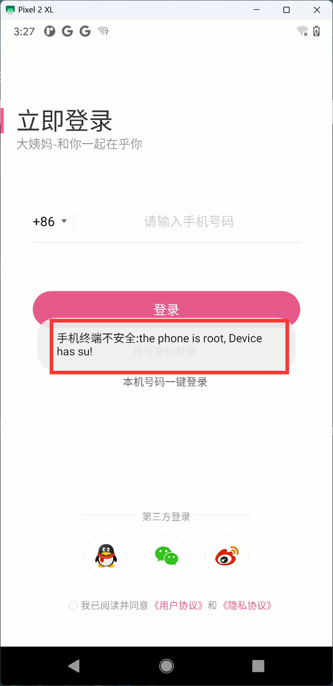
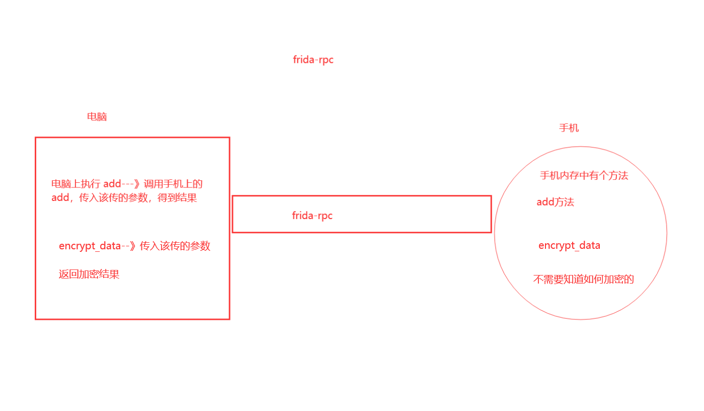

二十二、DYM
一 今日目标
大姨妈app
目标：登录sign签名
版本：v8.6.0.apk
# 大姨妈app
# 破解登录
# 版本：v8.6.0
# 学习到到的
1 root检测和绕过--（银行类的app）
2 frida-rpc使用--（硬破so文件,调用传入该传的参数，把结果跑出来的）
3 基于别人的so文件，自己写apk调用---(原来硬破so文件，通过自己写apk，主动调用)
# 把大姨妈apk安装到手机
adb install 大姨妈v8.6.0.apk
# 打开大姨妈apk，由于咱们手机root了，一打开软件，提示 手机被root了，只能强制退出，进不到登录页面
二 Root检测
2.1 root检测原理
# 检测原理---》运行app--》app会用代码去固定位置检查，当前位置下有没有su 命令，如果有，说明手机root了
# 检测原理---》root的手机，会有一些特征：典型的特征就是 su 命令
# 我们使用的root工具是：面具，superuser.apk--->每个软件都有不同特征
# 只要手机root了，会在如下目录出现特殊的标识
"/system/bin/su", # 不同root软件，生成的位置不同，面具一般在这个目录下
"/data/local/bin/su",
"/data/local/su",
"/data/local/xbin/su",
"/sbin/su",
"/system/app/Superuser.apk",
"/system/bin/failsafe/su",
"/su/bin/su",
"/system/sd/xbin/su",
"/system/xbin/busybox",
"/system/xbin/daemonsu",
"/system/xbin/su",
"/system/sbin/su",
# 我们查看手机是否必备root，直接进入：/system/bin 看看有没有su可执行文件
adb shell # 进入到手机
su # 获得超级用户权限
/system/bin # 进入到目录下
ls # 查看当前目录下的文件或文件夹
ls | grep su # 查看当前目录下 名字中包含 su 的 文件或文件夹
# app 有没有权限检测这些目录？
app有这些权限
# 知道了检测原理，绕过
1 反编译apk，找到检测代码--》hook，让它不执行---》绕过强制跟新一样
2 通过修改 su 可执行文件的名字
aosp 刷机并root，修改su文件名 su1

# 明确了它的检测原理，绕过
1 反编译+hook---》检测函数---》让它检测函数不执行
2 改文件名：改su1可执行文件名字
aosp刷机--》把原来的su可执行文件，改名字
# 4种方案绕过
2.2 root检测绕过方案一
# 网上有人开源一个绕过root检测的通用脚本
# 地址：https://github.com/AshenOneYe/FridaAntiRootDetection
# 这个东西的原理就是hook方案（可能是c层，可能是java层）---》不让app检测到su文件
# js hook方案，python的hook方案
frida -U -f com.yoloho.dayima -l hook.js
### 使用步骤:
# 1 复制它提供的 antiroot.js
# 2 启动frida，端口转发
# 3 运行这个js脚本
# 4 启动app，发现root检测就检测不到了
2.3 root检测绕过方案二
##### 面具+Shamiko模块方案+隐藏magisk应用
# 1 把提供的Shamiko-v0.5.2-120-release.zip，推送到手机
adb push Shamiko-v0.5.2-120-release.zip /sdcard/Download/Shamiko-v0.5.2-120-release.zip
# 2 选择从本地安装，将zip刷入--图1 ，图2，图3
# 3 刷入成功，重启，可以看到 图4 ，图5
# 4 在面具中选择--》主页---》设置(右上角)--》选择配置排除列表 图6
# 5 再打开app，就没有提示了
# 注意：针对一些银行类app，不仅做root检测，还做面具检测(是否安装面具)-->通过修改面具应用的名字，实现绕过 图 7
2.4 root 检测绕过方案三
#### frida-hook方案---》通过反编译，找到root检测位置，通过hook，返回false绕过
# 1 反编译app
# 2 搜索 威胁您的
# 3 找到代码，图 2
# 4 查看MiscUtil.isRooted()，如下图
-public static final String y = "su";
# 5 查看isSimulator--》Build.FINGERPRINT
-cat /system/build.prop
# 6 我们通过 hook isRooted()和isSimulator(),都返回false，即可绕过

2.4.1 hook脚本
// hook 不成功，卸载重装
//1 端口转发
import subprocess
# 使用sbuprocess模块，执行命令，如果转发不了，就执行命令
'''
adb forward tcp:27042 tcp:27042
adb forward tcp:27043 tcp:27043
'''
subprocess.run('adb forward tcp:27042 tcp:27042')
subprocess.run('adb forward tcp:27043 tcp:27043')
//2 js脚本
Java.perform(function () {
var MiscUtil = Java.use("com.yoloho.libcore.util.MiscUtil");
MiscUtil.isRooted.implementation = function () {
return false;
}
MiscUtil.isSimulator.implementation = function (ctx) {
return false;
}
var SystemManager = Java.use("com.mobile.auth.gatewayauth.manager.SystemManager");
SystemManager.checkEnvSafe.implementation = function () {
return null;
}
});
// frida -U -f com.yoloho.dayima -l root.js
// frida -UF -l root.js
// python 脚本
import frida
import sys
rdev = frida.get_remote_device()
pid = rdev.spawn(["com.yoloho.dayima"])
session = rdev.attach(pid)
scr = """
Java.perform(function () {
var MiscUtil = Java.use("com.yoloho.libcore.util.MiscUtil");
MiscUtil.isRooted.implementation = function () {
console.log('绕过')
return false;
}
MiscUtil.isSimulator.implementation = function (ctx) {
console.log('绕过')
return false;
}
});
"""
script = session.create_script(scr)
def on_message(message, data):
print(message, data)
script.on("message", on_message)
script.load()
rdev.resume(pid)
sys.stdin.read()
2.5 root 检测绕过方案四
#### aosp 刷机方案
# 后面会学习 aosp刷机----》绕过root检测---》定制脱壳机
# aosp是什么
Android是开源的，AOSP（Android Open Source Project）为Android开源项目的缩写,自己编译Android系统
免费开源---》拿到它的源代码---》修改它的代码---》编译---》装到手机上---》自己的操作系统
鸿蒙
小米 miui是--》改ui改的多，底层基本没改
三 抓包
# 请求地址：https://uicapi.yoloho.com/user/login
# 请求方式：POST
# 请求头：无特殊
# 请求参数：
device #特殊
#请求体：
password # 加密了
sign #特殊
# 我们目标
-破解 device 密码 sign
四 逆向
4.1 device
# 1 搜索 device，搜到很多，所以我们搜索 其他的 releasever userStatus
# 2 找到 public Response intercept(Interceptor.Chain chain)
-newBuilder.addQueryParameter("device", URLEncoder.encode(PeriodAPIV2.getInstance().getDeviceCode(), "UTF-8"));
# 3 查看：PeriodAPIV2.getInstance().getDeviceCode()
# 4 getDeviceCode
public String getDeviceCode() {
String str;
synchronized (lock_device) {
if (deviceCode == null) {
setDeviceCode();
}
str = deviceCode;
}
return str;
}
#5 查看setDeviceCode --》字符串相加后，通过sha-1加密--》每位转成16进制，不足2位用0补齐
String str6 = str + str3 + str2 + str4 + str5;
MessageDigest messageDigest = MessageDigest.getInstance("sha-1");
messageDigest.update(str6.getBytes());
byte[] digest = messageDigest.digest();
String lowerCase = Integer.toHexString(b & 255).toLowerCase(Locale.getDefault());
if (lowerCase.length() < 2) {
lowerCase = "0" + lowerCase;
}
stringBuffer.append(lowerCase);
# 6 我们hook setDeviceCode 和messageDigest.update 查看入参
4.1.1 hook-setDeviceCode和messageDigest.update
Java.perform(function () {
var MiscUtil = Java.use("com.yoloho.libcore.util.MiscUtil");
MiscUtil.isRooted.implementation = function () {
return false;
}
MiscUtil.isSimulator.implementation = function (ctx) {
return false;
}
var SystemManager = Java.use("com.mobile.auth.gatewayauth.manager.SystemManager");
SystemManager.checkEnvSafe.implementation = function () {
return null;
}
var PeriodAPIV2 = Java.use("com.yoloho.controller.api.PeriodAPIV2");
var flag = false;
PeriodAPIV2.setDeviceCode.implementation = function () {
console.log("-------------------------setDeviceCode-------------------------")
flag = true;
return this.setDeviceCode();
}
var MessageDigest = Java.use("java.security.MessageDigest");
var ByteString = Java.use("com.android.okhttp.okio.ByteString");
MessageDigest.update.overload("[B").implementation = function (data) {
if (flag) {
console.log(ByteString.of(data).utf8(), '\n' );
console.log("---------------")
}
return this.update(data);
}
});
// frida -U -f com.yoloho.dayima -l 2.hook.js
4.1.2 hook后的信息
str = 设备ID（可随机、可为空）
str3 = 安卓ID（可随机）
str2 = 手机平台等各种信息
str4 = wifi MAC
str5 = 蓝牙MAC
null #str
a8da7415550cd43a #str3 安卓id，可随机生成
taimengooglearm64-v8ataimenRP1A.201005.004.A1abfarm-01392RP1A.201005.004.A1GooglePixel 2 XLtaimenrelease-keysuserandroid-build #str2
C6:07:96:ED:C1:32 # str4 wifi信息
02:00:00:00:00:00 #str5 蓝牙信息
4.1.3 python实现(跟抓包抓到的数据一致)
import hashlib
data_string ="nulla8da7415550cd43ataimengooglearm64-v8ataimenRP1A.201005.004.A1abfarm-01392RP1A.201005.004.A1GooglePixel 2 XLtaimenrelease-keysuserandroid-buildC6:07:96:ED:C1:3202:00:00:00:00:00"
# sha1加密
hash_object = hashlib.sha1()
hash_object.update(data_string.encode('utf-8'))
arg7 = hash_object.hexdigest()
print(arg7)
4.2 密码
# 1 搜索 "password"
# 2 找到
String privateStrHandle = DayimaPrivateUtil.privateStrHandle(str2, str);
arrayList.add(new BasicNameValuePair("password", privateStrHandle));
arrayList.add(new BasicNameValuePair("sign", Crypt.encrypt_data(0L, sb.toString(), sb.length()))); #暂时不分析，后面破解sign
# 3 str 是手机号，str2暂时不知道--》查看privateStrHandle
public static String privateStrHandle(String str, String str2) {
String encrypt = AESUtil.encrypt(str, MD5Util.getMD5(str2).substring(0, 16).toLowerCase(), "yoloho_dayima!%_");
return TextUtils.isEmpty(encrypt) ? str : encrypt;
}
# 4 调用AESUtil.encrypt
-传入 str
-对手机号使用md5加密，结果取前16位转小写
-传入字符串：yoloho_dayima!%_
# 5 查看AESUtil.encrypt
# str2 是手机号md5加密后的取16位
# str3是固定的yoloho_dayima!%_
public static String encrypt(String str, String str2, String str3) {
try {
return Base64.encodeBytes(genAESCipher(str2, str3, 1).doFinal(str.getBytes("utf-8")));
} catch (Exception unused) {
return "";
}
}
# 6 继续查看genAESCipher--》本质是aes加密
public static Cipher genAESCipher(String str, String str2, int i2)
SecretKeySpec secretKeySpec = new SecretKeySpec(str.getBytes(), "AES");
IvParameterSpec ivParameterSpec = new IvParameterSpec(str2.getBytes());
-ase的key 是str,就是 手机号使用md5加密，结果取前16位转小写
-aes的iv 是 str2，是固定的yoloho_dayima!%_
-加密的明文是：str ,hook一下看一下，就是明文密码
# 7 所以 密码的核心逻辑是
明文密码通过aes加密，aes的key是手机号通过md5加密后的前16位，iv是固定的yoloho_dayima!%_
4.2.1 hook-AESUtil-encrypt查看入参
Java.perform(function () {
var MiscUtil = Java.use("com.yoloho.libcore.util.MiscUtil");
MiscUtil.isRooted.implementation = function () {
return false;
}
MiscUtil.isSimulator.implementation = function (ctx) {
return false;
}
var SystemManager = Java.use("com.mobile.auth.gatewayauth.manager.SystemManager");
SystemManager.checkEnvSafe.implementation = function () {
return null;
}
var AESUtil = Java.use("com.yoloho.libcore.util.AESUtil");
AESUtil.encrypt.implementation = function (str,str2,str3) {
console.log(str,str2,str3)
return this.encrypt(str,str2,str3);
}
});
// lqz12345 9eb091a1fb36369d yoloho_dayima!%_
4.2.2 python实现密码加密
import base64
from Crypto.Cipher import AES
from Crypto.Util.Padding import pad
KEY = "9eb091a1fb36369d"
IV = "yoloho_dayima!%_"
password = "lqz12345"
aes = AES.new(
key=KEY.encode('utf-8'),
mode=AES.MODE_CBC,
iv=IV.encode('utf-8')
)
raw = pad(password.encode('utf-8'), 16)
res = base64.b64encode(aes.encrypt(raw))
print(res) # WA89qByLlDeaGjmVNzXm/w== 跟抓包一样
4.3 sign
# 1 刚刚找到sign的位置了
public void loginByAccount(final String str, final String str2)
StringBuilder sb = new StringBuilder();
sb.append(PeriodAPIV2.getInstance().getDeviceCode());
sb.append("user/login");
sb.append(str); # 手机号
sb.append(privateStrHandle);# 密码密文
arrayList.add(new BasicNameValuePair("sign", Crypt.encrypt_data(0L, sb.toString(), sb.length())));
arrayList.add(new BasicNameValuePair("sign", Crypt.encrypt_data(0L, sb.toString(), sb.length())));
# 2 查看Crypt.encrypt_data--》三个参数：0,sb字符串，sb的长度
public class Crypt {
static {
System.loadLibrary("Crypt");
}
public static native String encrypt_data(long j2, String str, long j3);
}
# 3 正常我们应该去逆向so文件
libCrypt.so
# 4 这次我们使用frida-rpc方案解决
4.3.1 hook得到encrypt_data的参数
Java.perform(function () {
// 绕过root检测############
var MiscUtil = Java.use("com.yoloho.libcore.util.MiscUtil");
MiscUtil.isRooted.implementation = function () {
return false;
}
MiscUtil.isSimulator.implementation = function (ctx) {
return false;
}
// 绕过root检测############
// hook去掉吐司 手机不安全 提示
var SystemManager = Java.use("com.mobile.auth.gatewayauth.manager.SystemManager");
SystemManager.checkEnvSafe.implementation = function () {
return null;
}
//hook去掉吐司 手机不安全 提示
var AESUtil = Java.use("com.yoloho.libcore.util.Crypt");
AESUtil.encrypt_data.implementation = function (j2, str, j3) {
console.log(j2, str, j3)
return this.encrypt_data(j2, str, j3);
}
});
//frida -U -f com.yoloho.dayima -l 9-hook--encrypt_data看入参.js
// 0 fd6d0ce86280f3fa11a0a0774c06fef2446aee82user/login18953675221WA89qByLlDeaGjmVNzXm/w== 85
#
0 拼接明文 明文长度
public static native String encrypt_data(long j2, String str, long j3);
#long j2 ：0
# String str： 拼接的明文 设备id+user/login+手机号+密码密文
#long j3：明文长度
j2=0
str=64e6176e45397c5989504e76f98ecf2e63b2679euser/login18953675221WA89qByLlDeaGjmVNzXm/w==
j3=85
4.3.2 查看 libCrypt.so源码
# 1 使用IDA打开64位so文件
# 2 搜索java--》找到
jstring __fastcall Java_com_yoloho_libcore_util_Crypt_encrypt_1data(JNIEnv_ *a1, __int64 a2, __int64 a3, __int64 a4)
{
jsize v7; // w22
const char *v8; // x0
char v10[36]; // [xsp+4h] [xbp-5Ch] BYREF
__int64 v11; // [xsp+28h] [xbp-38h]
v11 = *(_QWORD *)(_ReadStatusReg(ARM64_SYSREG(3, 3, 13, 0, 2)) + 40);
v7 = a1->functions->GetStringUTFLength((JNIEnv *)a1, (jstring)a4);
v8 = a1->functions->GetStringUTFChars(a1, a4, 0LL);
sub_1DA0(a3, v8, v7, v10);
return a1->functions->NewStringUTF(a1, v10);
}
# 3 分析---》三个参数：0,sb字符串，sb的长度
v10：定义的空数组
a3：0
a4：sb字符串
a5：sb的长度
# 4 执行完sub_1EE4，对v10进行赋值
# 5 查看__int64 __fastcall sub_1DA0(__int64 a1, char *a2, __int64 a3, char *a4)
-传入后，v10，就是a4，我们看a4谁在操作
-做了很多字符串格式
sprintf(a4, "%02x", (unsigned __int8)v27[0]);
sprintf(a4 + 2, "%02x", (unsigned __int8)v27[1]);
sprintf(a4 + 4, "%02x", (unsigned __int8)v27[2]);
sprintf(a4 + 6, "%02x", (unsigned __int8)v27[3]);
sprintf(a4 + 8, "%02x", (unsigned __int8)v27[4]);
sprintf(a4 + 10, "%02x", (unsigned __int8)v27[5]);
sprintf(a4 + 12, "%02x", (unsigned __int8)v27[6]);
sprintf(a4 + 14, "%02x", (unsigned __int8)v27[7]);
sprintf(a4 + 16, "%02x", (unsigned __int8)v27[8]);
sprintf(a4 + 18, "%02x", (unsigned __int8)v27[9]);
sprintf(a4 + 20, "%02x", (unsigned __int8)v27[10]);
sprintf(a4 + 22, "%02x", (unsigned __int8)v27[11]);
sprintf(a4 + 24, "%02x", (unsigned __int8)v27[12]);
sprintf(a4 + 26, "%02x", (unsigned __int8)v27[13]);
sprintf(a4 + 28, "%02x", (unsigned __int8)v27[14]);
# 6 假设这个过程很复杂，我们不硬核破解它，使用frida-rpc直接调用执行，返回结果
五 frida-rpc
5.1 遇到so无法分析算法如何做
# 1 直接分析---之前在做
# 2 frida-rpc，直接调用手机中方法。
# 3 编写安卓应用，直接调用so文件中的方法。
# 4 unidbg，用java代码模拟手机去运行so中的方法。
5.2 frida-rpc是什么
frida 提供了一种跨平台的 rpc (远程过程调用)机制,通过 frida rpc 可以在主机和目标设备之间进行通信,并在目标设备上执行代码
Frida-RPC 是一个基于 Frida 框架的扩展，用于在不同进程之间进行远程过程调用（RPC）。Frida 是一个功能强大的动态插桩工具，它允许开发人员在运行时监控、修改和控制应用程序的行为。通过使用 Frida-RPC，您可以在不同的进程之间建立通信通道，使得您能够从一个进程中调用另一个进程的函数或方法，就好像它们都在同一个进程中一样
# 缺点:
-依赖于frida，还得运行app，脱离他们无法执行

5.5 rpc脚本
### 流程
1 手机端启动 frida-server
2 运行app
3 电脑端端口转发，运行脚本
import frida
rdev = frida.get_remote_device()
session = rdev.attach("大姨妈")
scr = """
rpc.exports = {
encrypt:function(j2,str,j3){
var res;
Java.perform(function () {
var Crypt = Java.use("com.yoloho.libcore.util.Crypt");
res = Crypt.encrypt_data(j2,str,j3);
});
return res;
}
}
"""
script = session.create_script(scr)
script.load()
import frida
rdev = frida.get_remote_device()
session = rdev.attach("大姨妈")
scr = """
rpc.exports = {
xx:function(j2,str,j3){
var res;
Java.perform(function () {
// 包.类
var Crypt = Java.use("com.yoloho.libcore.util.Crypt");
// 类中的方法
res = Crypt.encrypt_data(j2,str,j3);
});
return res;
}
}
"""
script = session.create_script(scr)
script.load()
# python 调用
sign = script.exports_sync.xx(0, "bcae572b84d20c385d6d9d2d7d9e645da29da3c0user/login18953675221WA89qByLlDeaGjmVNzXm/w==", 85)
print(sign)
# 得到结果20d97aad1b9ba75db3e0901e8c3b11d5 跟抓包结果一致
5.6 frida-rpc中的类型
# 我们使用python，写frida的脚本，frida脚本调用 app中的java代码，中间涉及到参数类型的转换，转换原理如下
python--》传递参数时，必须传递可以被json序列化的类型---》js拿到参数---》传递给java时，必须使用frida的API
## python中那些类型可以被json序列化？
+-------------------+---------------+
| Python | JSON |
+===================+===============+
| dict | object |
+-------------------+---------------+
| list, tuple | array |
+-------------------+---------------+
| str | string |
+-------------------+---------------+
| int, float | number |
+-------------------+---------------+
| True | true |
+-------------------+---------------+
| False | false |
+-------------------+---------------+
| None | null |
+-------------------+---------------+
## 除了上述类型，都不能传递给js，比如我们要传递字节数组()
# frida常用api大全：搜索引擎搜索，或者官网
# js语法+frida的api转换--》再调用java
var Crypt = Java.use("com.yoloho.libcore.util.Crypt");
5.6.1 python传递给js
# 字符串，数字，列表，字典，都可以直接传递
# 字节不能直接传递
import frida
rdev = frida.get_remote_device()
session = rdev.attach("大姨妈")
scr = """
rpc.exports = {
xx:function(b){
console.log(b) // 在里面循环读出来，转成字节形式，继续使用
}
}
"""
script = session.create_script(scr)
script.load()
# 我们传递字节数组，因为字节数组不能序列化，所以传递会报错 ：TypeError: Object of type bytearray is not JSON serializable
b = bytearray()
b.append(66)
b.append(77)
b.append(88)
# script.exports_sync.xx(b)
# 换成列表传递
l = [66, 77, 88]
script.exports_sync.xx(l)
字节数组
import frida
rdev = frida.get_remote_device()
session = rdev.attach("大姨妈")
scr = """
rpc.exports = {
encrypt:function(v1,v2){
console.log(v1,typeof v1);
// 转换为java的字节数组
var bs = Java.array('byte',v1);
console.log(JSON.stringify(bs))
}
}
"""
script = session.create_script(scr)
script.load()
arg_bytes = "彭于晏".encode('utf-8')
byte_list = [i for i in arg_bytes]
script.exports_sync.encrypt(byte_list)
使用StringBuilder
import frida
rdev = frida.get_remote_device()
session = rdev.attach("大姨妈")
scr = """
rpc.exports = {
encrypt:function(v1,v2){
const StringBuilder = Java.use('java.lang.StringBuilder');;
var obj = StringBuilder.$new(); // obj = new StringBuilder()
obj.append(v1);//obj.append(v1)
obj.append(v2);//obj.append(v2)
console.log(obj.toString())
}
}
"""
script = session.create_script(scr)
script.load()
script.exports_sync.encrypt("彭于晏", "很帅")
5.6.2 js传递给java
import frida
rdev = frida.get_remote_device()
session = rdev.attach("大姨妈")
scr = """
rpc.exports = {
encrypt:function(v1,v2,v3,v4){
// 1.整型和字符串直接用
console.log(v1,v2);
console.log('--------------------------')
// 2.字节数组
var v3_obj = Java.array('byte',v3);
console.log(v3_obj, JSON.stringify(v3_obj));
console.log('--------------------------')
// 3.TreeMap对象 obj.get("xx")
var TreeMap = Java.use("java.util.TreeMap");
var v4_obj = TreeMap.$new();
for(let key in v4){
//console.log(key,v4[key]);
v4_obj.put(key,v4[key])
}
console.log( v4_obj )
console.log( v4_obj.get("name") )
console.log( v4_obj.get("age") )
var keyset = v4_obj.keySet();
var it = keyset.iterator();
while(it.hasNext()){
var keystr = it.next().toString();
var valuestr = v4_obj.get(keystr).toString();
console.log(keystr, valuestr);
}
console.log('--------------------------')
}
}
"""
script = session.create_script(scr)
script.load()
v3 = [i for i in "justin".encode('utf-8')]
# 数字 字符串 字节转为列表 字典 都可以传入
script.exports_sync.encrypt(10, "justin", v3, {"name": "root", "age": "18"})
六 安卓应用
自己开发一个安卓程序，将so文件放入到项目中，然后在项目中调用。
6.1 创建空项目
6.2 拷贝so到指定目录
6 .3 build.gradle 添加
android {
sourceSets {
main {
jniLibs.srcDirs = ['libs']
}
}
}
6 .4 编写native类
package com.yoloho.libcore.util;
public class Crypt {
static {
System.loadLibrary("Crypt");
}
public static native String encrypt_data(long j2, String str, long j3);
}
6.5 app调用
TextView tv = binding.sampleText;
// 调用
String sign = Crypt.encrypt_data(0, "64e6176e45397c5989504e76f98ecf2e63b2679euser/login15131255555A4rE0CKaCsUMlKpHjtL0AQ==", 85);
Log.e("sign=", sign);
tv.setText(sign);
// 关联的其他类，如果so中方法调用过程中用到其他包中的类，我们需要补上相关类和包
七 代码整合
import requests
import hashlib
import base64
from Crypto.Cipher import AES
from Crypto.Util.Padding import pad
username=input('手机号：')
password=input('密码：')
###device开始
data_string ="nulla8da7415550cd43ataimengooglearm64-v8ataimenRP1A.201005.004.A1abfarm-01392RP1A.201005.004.A1GooglePixel 2 XLtaimenrelease-keysuserandroid-buildC6:07:96:ED:C1:3202:00:00:00:00:00"
# sha1加密
hash_object = hashlib.sha1()
hash_object.update(data_string.encode('utf-8'))
device = hash_object.hexdigest()
print(device)
###device结束
###密码开始
md5=hashlib.md5()
md5.update(username.encode('utf-8'))
KEY =md5.hexdigest()[0:16].lower()
print(KEY)
# KEY = "9eb091a1fb36369d"
IV = "yoloho_dayima!%_"
aes = AES.new(
key=KEY.encode('utf-8'),
mode=AES.MODE_CBC,
iv=IV.encode('utf-8')
)
raw = pad(password.encode('utf-8'), 16)
res_password = base64.b64encode(aes.encrypt(raw)).decode('utf-8')
print(res_password) # WA89qByLlDeaGjmVNzXm/w== 跟抓包一样
## 密码结束
####sign-开始
import frida
rdev = frida.get_remote_device()
session = rdev.attach("大姨妈")
scr = """
rpc.exports = {
xx:function(j2,str,j3){
var res;
Java.perform(function () {
// 包.类
var Crypt = Java.use("com.yoloho.libcore.util.Crypt");
// 类中的方法
res = Crypt.encrypt_data(j2,str,j3);
});
return res;
}
}
"""
script = session.create_script(scr)
script.load()
# python 调用
str=f"{device}user/login{username}{res_password}"
sign = script.exports_sync.xx(0, str, len(str))
### sign-结束
print(username)
print(res_password)
print(sign)
print(device)
data = {
'username': username,
'password': res_password,
'sign': sign,
'androidid': '3ed94fb26816f9d0',
'mac': '76:ED:36:36:9A:04',
'imei': '',
'density': '3.5',
'brand': 'google',
}
params = {
'device': device,
'ver': 630,
'screen_width': 1440,
'screen_height': 2712,
'model': 'Pixel 2 XL',
'sdkver': 30,
'platform': 'android',
'releasever': 11,
'channel': 360,
'latt': 0,
'lngt': 0,
'networkType': 0,
'token': '',
'userStatus': 0,
}
res = requests.post('https://uicapi.yoloho.com/user/login',params=params,data=data)
print(res.text)